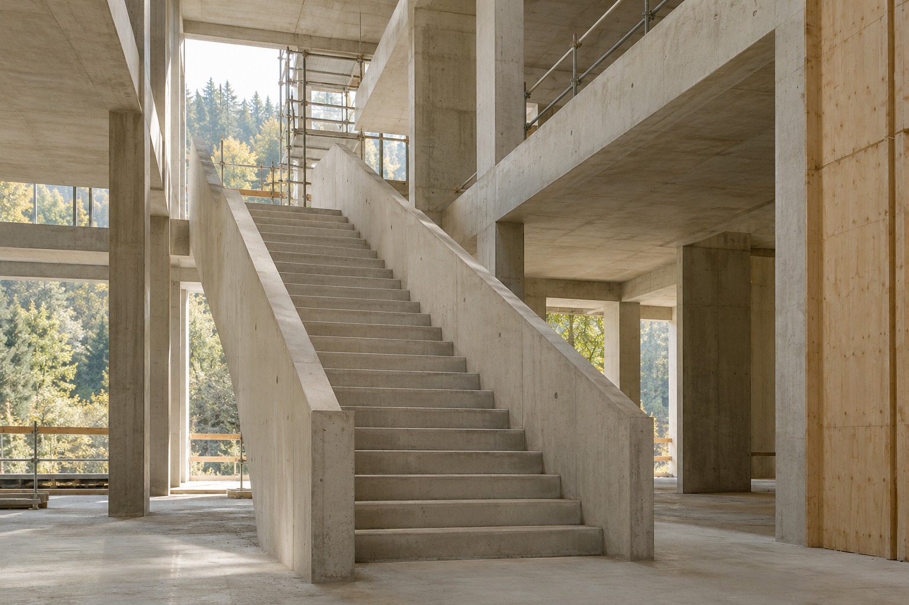
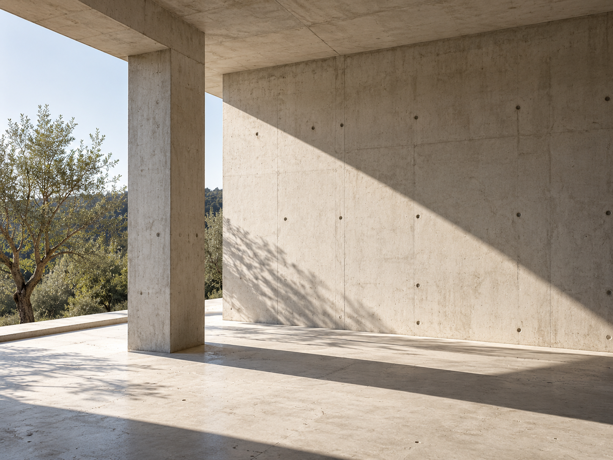

Écouter avant d’engager.
Comprendre vos enjeux, vos contraintes et vos priorités. Prendre le temps de cadrer une intervention qui répond au projet.
Maîtrise d’œuvre d’exécution & OPC.
Une présence engagée, du projet au chantier.

Notre rôle
Entre l’intention architecturale et la réalité du chantier, il y a des décisions, des échanges et des détails qui comptent. HYPHENS accompagne maîtres d’ouvrage et architectes avec une conviction : la qualité d’un projet se construit aussi dans la qualité de la relation.
Trois façons de faire
avancer votre projet.
Garder le projet en ligne de mire, jusque dans sa réalisation. Suivre l’exécution, rendre les sujets techniques lisibles et préparer les décisions qui font avancer le chantier.
Donner un rythme commun aux interventions. Organiser les séquences de travaux, articuler les interfaces et partager une lecture claire des échéances.
Accorder aux derniers détails la même attention qu’aux premières étapes. Accompagner la préparation de la réception et le suivi des points restant à traiter.
Un périmètre défini avec vous, selon les besoins et l’organisation de votre opération.
Notre approche

Comprendre vos enjeux, vos contraintes et vos priorités. Prendre le temps de cadrer une intervention qui répond au projet.
Faire dialoguer la maîtrise d’ouvrage, les architectes et les entreprises autour des sujets concrets de l’exécution.
Suivre ce qui se joue sur le chantier. Rendre visibles les points ouverts et garder un échange direct avec vous.
Un projet ne se résume pas à un planning.
Il se construit avec des personnes.
La trame d’une présentation des personnes et de leur rôle, à renseigner.
RéférencesUne galerie prête à accueillir les opérations et les missions validées.
Et si nous en parlions ?
Un premier échange pour comprendre
votre opération et vos attentes.